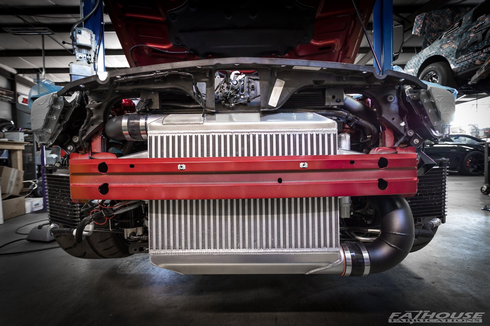
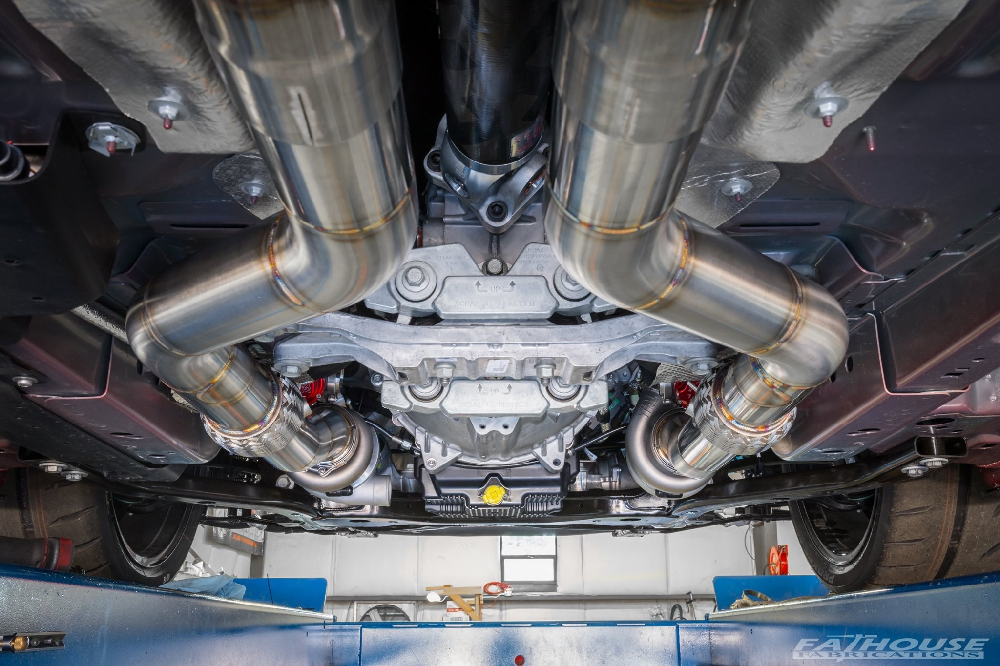

Hi, I am T!
I'm a car enthusiast and this is Ruby
I'm a car enthusiast and this is Ruby
Let me first share a bit of back story first. After owning a 2010 GT500 for two years I really fell in love with the concept of the mustang on steroids. Becoming hooked on the power, I has reluctant to go with a new Mustang with less ponies under the hood when the time came to get the new model, despite GT350s that just came out were much better cars in many different ways. After test driving one I could feel how the car was underpowered but at the same time very capable and just another level compared to the 2010 GT500 I owned. So I started waiting for the new GT500 to come out.
Finally on Jan 14th 2019 Ford unveiled it and, to my disappointment, the new GT500 turned out to be automatic. It was a dealbreaker for me. That didn't really leave me much of a choice other than going with a boosted GT350. In summer of 2019 I purchased Ruby and the journey began.
This site is sharing more about that journey and hopefully it can help someone in their search.
It turned out that even after 4 years being in production, it was hard to get a GT350 without a markup! Every dealeship I called had at least $10K markup, which made me open the map and go further and explore dealership in other states. One other things I was looking in parallel is whether to supercharge or turbocharge the car and what quality shops were out there who could give me the beast I was looking to drive. Digging the internet for boosted cars I frequently came across the cars Hennessey Performance was making and coincidently, the dealership just two miles away from them offered custom ordering for me at MSRP!
When the order was made, I started digging more about Henessey Performance and oh boy, all sorts of stuff came up. I realized it all had to be taken with a grain of salt, and that it was anekdotal, but the sheer amount of posts people sharing their sad stories got me thinking if I wanted to take the risk. The last nail in the coffin was my conversation about this topic with the dealership when the salesman I was working with told me although they were just a few miles away from the shop, they never sent any of their customers to Hennessey.
Wow, ok. Hmm. The search continued now with the car being delivered to the dealership in Texas, with me being in WA and uncertainty around how I was going to boost it. It didn't take too much longer though. Pretty soon I got to watch a bunch of religious videos with folks comparing turbos and supercharges, which led me to learn more about the technical differences and what it would meant for me as an owner.
At some point I came across a video of a twin turbo GT350 built by FathouseFab and exploring more I found out the cars they were building were not just garage built "one-time fun" ponies, but something they put an effort to be a finished product. At that time the idea of spending $14K on an engine management system sounded rediculous to me, and I nenver thought I would ever consider spending money on something like that, but more on that later. Watching further their other vides like the review of the MoTeC M150 system it became more clear that the guys not only loved what they were doing but knew that shit really well. So I called them up and felt really good about that discussion and decided to go with them. All the decisions were made which was a relief.
Did I mention FathouseFab is based in Indianapolis area? Flying from WA to TX to pick up my car, driving it 1,000 miles to IN to leave it with a person who I never met before and flying back to WA the same day was not something I would typically do, but it happened.
I guess, it's normal for car people to do these things so let's go with that. Afterall, it turned out to be an awesome trip with my son who got to stall a GT350 in the middle of the road surrounded by farms in Tennessee.
Driving the car for a 8hr/day was quiet an experience. I didn't feel tired though and I just couldn't stop looking back with a smile every time we walked away from the car after parking it to get something to chew.
The time moved really slow after leaving the car at FatFab. The updates I was getting once in a while were helping pass it until I could put my hands on the streering wheel again..
 The craftsmanship and quality of fabrication that goes into the build is very impressive, no wonder the crew earned their name in the market. One thing that distinguishes these builds is they don't lower the clearance, although the low turbo mounts.
Template